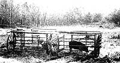
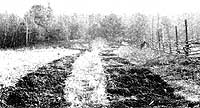

You can save money by turning some of your farmstead labor over to a new kind of
Because pigs seem to produce more edible meat per pound of feed than do other four-footed animals, we've found that the critters represent a relatively secure and profitable homestead investment. As an added advantage, the porkers-if the need arises-can be butchered at any age, without regard to their stage of growth and meat preparedness.
We became concerned, however, that our swine were able to wallow idly during a good part of the year, while the grain they consumed was costing us more by the month. In fact, our frustration over rising feed costs inspired us to start thumbing through back issues of MOTHER and scanning the feed grain sections of seed catalogs . . . in search of some moneysaving alternatives.
Our solution was developed (after a good bit of head scratching) from ideas we found in Gary Nelson's article "Pigs Plow My Garden!" (MOTHER NO. 35, page 20), which suggests putting the animals' snouts to work as rototillers . . . and in an R.H. Shumway Seeds men catalog (Dept. TMEN, 628 Cedar Street, Rockford, Illinois 61101), which listed an "Annual Hog Pasture Mixture" (No. 1612) containing 11 different seed varieties (field peas, soybeans, hairy vetch, clover, rape, sorghum, millet, turnips, barley, oats, and rutabagas) that are ready for grazing in six weeks.
We concluded, therefore, that if we set aside some pasture for pork, our pigs' grain consumption would be less for at least six months of the year . . . and that as they ate, the animals would automatically "till" the fields for subsequent plantings. The idea became even more appealing when we realized that pasturing pigs, whether young stock or pregnant sows, makes excellent nutritional sense. It seems that most green foods-especially grasses-provide carotene, which is converted to vitamin A and stored in the liver ... and shortages of this vitamin may cause piglets to be stillborn or to die shortly afterbirth. (Furthermore, if pigs receive only the bare minimum requirement of vitamin A, they may still suffer a retardation of growth: In a short time the pig's head becomes too large in proportion to its body.)
However, as we mulled over our brainstorm, a different-and larger-problem began to take shape. Our "Big Sally", you see, weighed at least 450 pounds . . . if the notion came upon her to head for a spot where the grass appeared to be greener, she'd make short work of the pasture fence. We had visions of her rooting up small outbuildings at a single snort!
No, lovable as they were, our grown pigs would need very strong pens . . . and leave it to my semi retired-welder husband to design enclosures made from steel! Once Paul sat down with a drawing pad that snowy February evening, poor Sal never had a roaming chance. He sketched and doodled and finally worked up a plan for a 10-foot angle-iron enclosure with steel wheels and a draw bar . .. in other words, a movable hog pen.
And, as we tossed his idea around, we quickly came up with a number of fine reasons to build the rolling cage. It would, of course, keep a pig secured so that such things as parsnips, beehives, coops, and picket fences would stay intact. The pen would also protect pregnant sows and at the same time guarantee that the ground would be worked exactly where we planned. In fact, the more we thought about the concept, the better we liked it.
Rolling hog enclosures, we figured, could accomplish the spring plowing, in addition to turning up new ground while leaving the stones on top. We could then renew the pasture by moving the pen forward each day and sowing seeds directly behind it .. . a practice which would permit the pig to pasture in that same area within a few short weeks, thanks to our fast-growing feed crops. (Remember, though, that it's inadvisable to let pigs graze in the same field for more than two years running, because some parasite eggs-including Ascaris suis-are particularly resistant to cold weather conditions and can accumulate, causing an area to become what's known as "pig sick".)
Once Paul had settled on a shape for the pen, he had to locate a source of material. Some farms have antiquated equipment left in the hedgerows, where trees grow up through the iron while the woodwork rots and falls out. A few of these relics are collector's items, and other pieces are worth something simply for their weight as junk . . . but the old hay-loaders from the days of loose hay don't seem to hold much value for most folks, and we found that the machines could easily be transformed into hog carts.
Actually, any strong and relatively lightweight material (such as wood or pipe) can be used to construct a traveling pigpen. We found that 8' X 10' is the optimum size for such an enclosure, and an angle-iron "fence" around the bottom of the assembly (set about 6 inches off the ground), with its edge turned inward, helps discourage the pig from rooting under and outside the barrier. A vertical sliding door, which can be locked in either extreme position with a pin, allows the pen to be brought up close to the barn for easy loading and unloading. And be sure to provide a shade at one end of the enclosure, and fasten water and feed pans inside.
After using these pasturing devices for several years (moving them, as necessary, two or three times a day), we're sold on the idea. By planting our combination pasture seed as early as possible-while the caged porkers are still turning up our garden plot for us-we've cut our feed bills and improved the health of our stock. As a matter of fact, we've found that after their litters are weaned, we need to feed our sows only half the grain that was necessary in the past. The result is a very economical livestock operation. [EDITOR'S NOTE: If you'd like to raise your own pigs for this purpose, turn to page 88.]
Perhaps best of all, our animals' natural rooting instincts are satisfied, while a good bit of what used to be hard labor for us is accomplished without our ever starting the gas-consuming tractor. Actually, it seems that our pigs were ready and willing to work for us all along ... we just hadn't given them the opportunity!
|
 |
 |
|